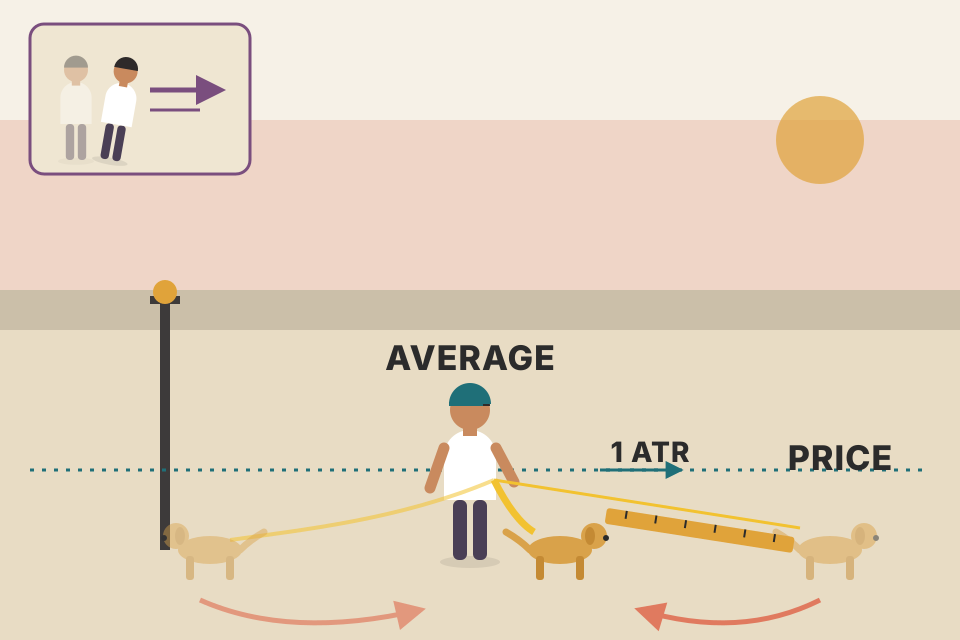
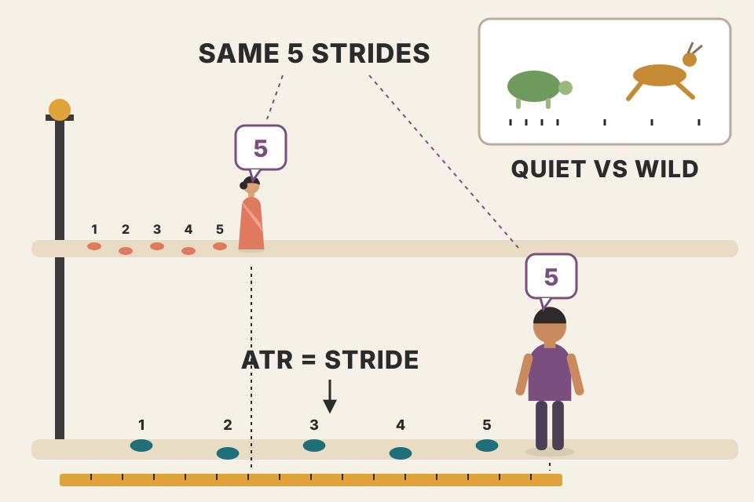
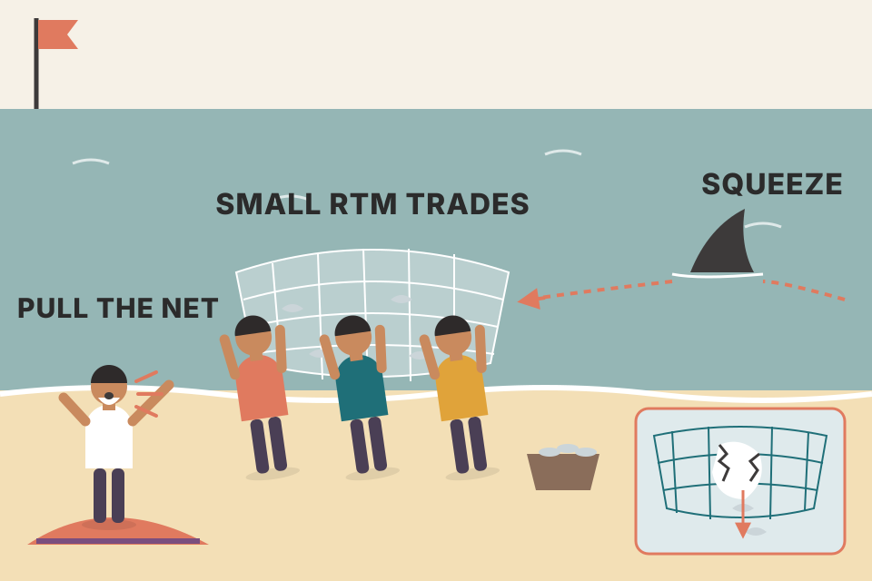
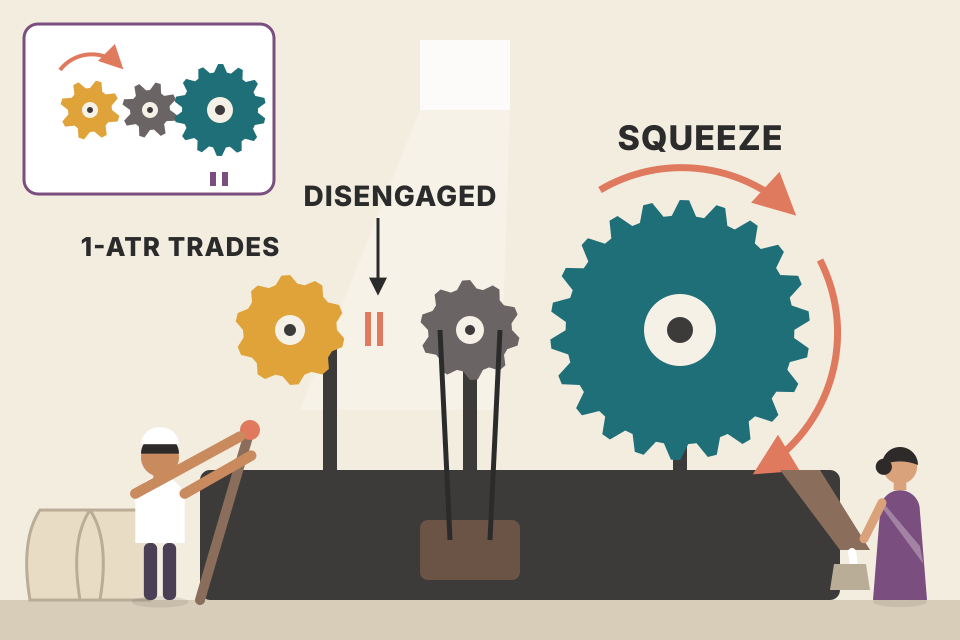

Carter's swing setup for daily charts: a market keeps stretching away from its average price and snapping back, and the Average True Range (ATR) tells you how far the stretch usually goes. He draws bands 1.5 ATR either side of a 13-period average, buys pullbacks to the middle in an uptrend (sells rallies to it in a downtrend), takes about 1 ATR of profit, keeps a wide stop, and switches the whole thing off when a squeeze fires. Then he shows how he expresses it with Delta 0.70 options and with a vertical credit spread. This page walks every idea in the book's order. Every chart uses simulated prices; where a chart stands in for one of Carter's figures, it is rebuilt from his text, because all nine figures (10.1–10.9) are blank in this PDF copy.
The chapter builds one setup and then names the one condition that breaks it. Read it as a chain: an average price, a normal stretch away from it, bands that mark the stretch, rules for trading inside the bands, and the squeeze that tells you to throw the bands away.
The opening story. If you were mugged walking down a street and lived, you'd change something: call the police, buy mace or a taser, stop using that street, or stop walking alone. Carter says traders who don't understand the market's normal ebb and flow do the opposite: they walk down the same dark alley alone, again and again. The five-minute chart is that alley, and the muggers keep seeing the same victim come back.
Who the muggers are. Computer trading programs ("algos"), which he pictures as terminators hunting your money. The useful part: many of them work moves that stay within a stock's Average True Range. Whether a market trends up, trends down or goes sideways, he says it keeps to its ATR most of the time.
Where ATR comes from. J. Welles Wilder built it for daily charts in the commodity markets. Carter finds it works just as well on daily charts of individual stocks.
The question the chapter answers. How far does a stock have to get from its 21 EMA before the odds of a return to the 21 go up? Pivots (Chapter 8) set ranges inside a day. Carter wants the same thing for daily and weekly charts: extension levels to buy and sell against for swing trades held days or weeks, not minutes or hours.
The link to pivots. This chapter isn't about pivots, but the idea is the same. A daily pivot is an "average price" of the previous day, which is one reason price is drawn back to it the next day: the market has to test whether it holds. In general, at any moment a market is either expanding away from its average price or reverting back to it ("reverting to the mean").
Figure 10.1 (blank here) is a daily gold chart with a 13-period and a 21-period EMA. They are the average prices over the last 13 and 21 days and they keep adapting, so together they form the key average-price zone that the market stretches away from and comes back to. The key question becomes: how far from that zone does price have to get before it has to start coming back?

A dog on an elastic lead. The owner (the average) walks steadily; the dog runs ahead and drops behind. The lead stretches, but only so far before the dog is pulled back, or the owner speeds up to catch it. ATR is the usual length of the stretch.
The bottom panel measures how far each close sits from the average, in ATRs. Amber bars mean the distance grew that day (expanding), teal bars mean it shrank (reverting). Notice that the bars rarely stay large for long, and that later in the chart, when the market gets wild, price moves much further in dollars but not much further in ATRs.
A moving average is a slow summary of where most recent trading took place. When price runs far from it, two things can close the gap: price comes back, or the average catches up. Either way the distance shrinks. Measuring the distance in ATRs instead of dollars makes the yardstick fit the market: a $20 move is huge in a quiet market and noise in a wild one. That is the whole trick of the chapter.
trading/trading_equations.md eq 16 (Ornstein–Uhlenbeck): a formal model of "pulled back to a mean", with a half-life for how fast the gap closes.Carter's answer is the average true range. In this chapter ATR means the average price range of the previous 14 periods.
Figure 10.2 adds ATR under the same gold chart. At point 1 the ATR is about 20, which for gold means $20.00 an ounce. So, most of the time, once price gets about $20 away from the mean zone (the 13 and 21 EMAs) it has to start coming back. At point 1 price got $20 above the averages and turned back toward them. At point 2 it got about $20 below them and came straight back. Later in the year the ATR rose to $60.00 (point 3), so price could then travel that much further before it needed to work its way back.

ATR is the market's stride length. A child and an adult both walk "a few steps" from a lamp post, but the adult ends up much further away. Judge "far" in strides, not metres, and you can compare a quiet gold market with a wild one.
The market starts around $1,650 with an ATR near $20, like Carter's point 1, and turns wild in the last third, where the ATR climbs toward $60, like his point 3. The dotted lines sit k ATRs outside the 13/21 zone; at k = 1 they are Carter's "about one ATR away" line.
Step through the table. Each day's true range is the largest of three numbers, so gaps count as range. The winner in each row is highlighted.
Carter only says "the average range of the prior 14 periods"; the formulas above are the standard definitions (beyond the book). Wilder's version is what most charting platforms plot; it is an exponential-style average, so one huge day fades out slowly instead of falling off a cliff after 14 days. The pooled readout checks the idea on simulated data. Switch between the two markets: the "built to revert" market is designed to come back, so its numbers are high by construction. The interesting line is the last one. Even in a pure random walk a lot of the gap closes because the average moves toward price, not because price comes back. Reversion to a moving average is partly arithmetic. That's why the setup needs the trend rules in section 04 and can't rely on "it always comes back".
trading/trading_equations.md lists ATR as eq 10, and trading/backtest_results_summary.md found fixed 1% risk with ATR stops as good as or better than volatility targeting.Figure 10.3 is a daily chart of the Swiss franc (SF) with a modified Keltner Channel: the ATR is plotted as outer bands around a mean. Carter's settings: the "mean" (the dotted middle band) is a 13-period average, and each outer band sits 1.5 × ATR from it. So at any moment the upper and lower bands are each 1.5 times the current ATR away from the middle.
His numbers. At point 1 the ATR reads 0.0100, which is 100 ticks on the franc. 1.5 × 100 = 150 ticks. At point 2 the lower band is 150 ticks below the middle, and at point 3 the upper band is 150 ticks above it.
Why 1.5? ATR is a lagging indicator. Multiplying by 1.5 gives a bit more room so the bands can hold the most recent price action.
A road with a centre line (the 13 mean) and two kerbs (the bands). The kerbs are placed one and a half "normal swerves" from the centre, so an ordinary swerve stays on the road and only a real loss of control hits the kerb.
Try 1.0: price pokes outside often, because yesterday's ATR is a little behind today's swings. At 1.5 it mostly stays inside. At 2.5 the bands are so wide they rarely matter.
The standard Keltner Channel (beyond the book) is a moving average with bands set a multiple of ATR away; Carter's version only changes the settings: a 13-period middle and 1.5 × ATR(14). Because the band width comes from ATR, not from a fixed percentage, the bands breathe: they widen as the market gets wild and narrow when it quiets. So a touch of the band always means "about one and a half normal days' range away from average", whatever the market or price level.
A surfer waiting for the set to come back to the beach break. In a steady swell you paddle in on each wave and get off before it dumps (sell early, 1 ATR). On a tsunami day you don't surf at all.
The rules below are Carter's as far as he states them. Like his SF example this market slopes up, so the step-through is long-only: buy when price touches the 13 mean while the mean is rising, target +1 ATR, stop 1.75 ATR below entry, which is just outside the lower band (the band is 1.5 ATR below the mean). Where he isn't specific, the page decides (marked): the trend is "rising" if the mean is higher than 5 days ago; if a bar touches both stop and target, the stop counts first; fills use the day's open when price gaps past a level.
150 simulated markets, fixed seeds, about 300 days each. Pick the market type and the rules.
Read the pooled table as mechanics, not proof. Three things show up clearly. Tight stops destroy the win rate: a 0.5 ATR stop sits inside normal daily noise, so a market that would have reached the target first shakes you out; switch the stop and the win rate falls from roughly 70% to the 30s. A 1-ATR target is hit more often than 1.5, and quicker, which is what Carter wants for option trades. Direction matters when the market doesn't truly revert: in the random walk with drift, fading the upper band loses while buying the mean in the drift direction doesn't. In the "built to revert" market, fading works too, because that model pulls price back from both sides equally; real trends that run (Carter's point A) behave more like the other two markets. The half-size-then-double rule turns many losers into small winners (higher win rate) but caps the winners, so the average per trade can go down: it's a smoothing tool, not free money.
trading/backtest_results_summary.md: the setup that held up best in your NSE tests is the weekly pullback (dip to the 20-week EMA in a weekly uptrend, 2.5 ATR stop). Same family as this: buy a pullback to an average, in the trend's direction, with an ATR-sized stop.Plenty of people have tried. Reversion to the mean isn't a new idea at all. Carter has seen two things trip traders up.
Rule 1: don't fight the trend. On the SF chart, traders are tempted to short the upper band in a clear uptrend. It works sometimes, but it's dangerous, as point A showed. Same in a downtrend: no need to buy the lower band when you can short the pullbacks to the mean. Advanced traders with large accounts who scale in can fade both ways (short uptrends at the upper band, buy downtrends at the lower band); newer traders with small accounts get chewed up trying. With options, though, vertical credit spreads can be sold safely at these levels (section 09).
Rule 2: the trade becomes irrelevant once a squeeze fires. Figure 10.4 is the SF daily with the squeeze indicator under it. The short version (the full one is in Ch.11): the darker dots at point 1 show volatility tightly compressed and about to be released; here the compression lasts 13 bars. The first lighter dot after the dark run (point 2) says the energy is being released, and that's the trigger. If the histogram is above zero then, it's a long; below zero, a short. The squeeze stays valid as long as the histogram keeps moving in the trade's direction. When it loses momentum (shown by darker-coloured bars) the squeeze is no longer "in play".
A coiled spring. The dark dots are the spring being pressed; the first light dot is your hand letting go. While the spring is flying, nobody measures how far it "normally" travels.
The squeeze here is a stand-in, marked as such: dots are dark when 20-day Bollinger Bands (2 standard deviations) sit inside a 20-day Keltner Channel (1.5 ATR), and the histogram is a 20-day linear-regression momentum. Those are the commonly published TTM Squeeze settings, not settings given in this chapter; Ch.11 covers them. The chart picks the squeeze with the longest in-play run.
Buying the mean in an uptrend has the trend's drift working for you while you wait. Shorting the upper band has it working against you, so every extra day in the trade costs a little, and when the market runs (point A, or a breakout) the trade has no natural end except the stop. A squeeze is the moment the market changes character: volatility was compressed, so ATR was small and the bands were narrow; when it releases, price travels several of those small ATRs in one direction and the narrow bands mean nothing. That's why Carter says the setup is valid all the time except then.
Note the franc's ATR here is 120 ticks, against 100 ticks in the Fig 10.3 example: ATR changes over time, so the tick values are a snapshot, not a constant.

Fishing with a net sized for small fish. Most days it works. The day a shark swims through, the net is torn and you lose the week's catch. The squeeze is the shark warning: pull the net out of the water.
150 simulated markets, each with a quiet trend, a coil, a breakout in a random direction and another quiet stretch. Same rules as section 04 (1 ATR target, stop outside the band). Compare ignoring squeezes with taking the bands off while one is in play.
Assumption (not in the book): before +2 ATR the stop is the 2 × ATR universal stop from point 6 of section 04. If the rollover level is set above the furthest point, it is capped at the furthest point.
The simulated "trap" reproduces the shape of Carter's 70/30 story for the band-fader: many small wins in quiet periods and a cluster of full-size losses in breakouts (around 24% wins there in this model), enough to wipe out the quiet-period gains. Taking the bands off while a squeeze is in play cuts those losses but not all of them, because a breakout can keep going after the indicator's momentum first fades. For the with-trend trader the model shows less damage: pullbacks to the mean inside a strong breakout are rarer and usually go the breakout's way. That's a property of this model, so treat it as a question to test on real data, not an answer. The scale-out plan works the other way round from RTM: small, sure profits early (1 ATR), then a free trade (stop at entry after 2 ATR), then a runner that only momentum ends.
trading/backtest_results_summary.md: VWAP pullback / VWAP reversion "lost in every version" intraday, and no intraday strategy passed. That fits Carter keeping RTM to daily and weekly charts, though your test is of a different setup, so it's a parallel, not a confirmation.trading/intraday_swing_playbook.md lists Carter Ch.11 (the squeeze) as a book source for its breakout swing setup.The squeezes (points 1 and 2). Figure 10.5 is AMZN daily with RTM bands and the squeeze. At points 1 and 2 a squeeze fires long. He buys in-the-money calls (Delta 0.70 or better), scales out of the first part at the ATR levels, and holds a chunk for the whole ride. The first squeeze was a big one: AMZN climbed steadily from $125 to $160 in about a month, the kind of move where an option can rise 500% or more. With options on daily squeezes, expect to be in the trade one to three weeks, so if you're a week from expiry, buy the next month instead. The RTM bands are ignored until the squeeze loses momentum (two darker momentum bars); then it's officially over and RTM trading resumes. The second squeeze gave a nice pop, but it didn't last.
The RTM trades (points 3–7). The distance from the middle to the upper band was about $6.00. He buys in-the-money calls on pullbacks (to the middle band, by the logic of the setup; the text just says "the band") and sells when AMZN has risen about $4.50, since the band is 1.5 ATR and he wants only 1 ATR. With Delta 0.70 that's about $3.15 on the option: for example, buy a call at $9.00 and sell it a few days later at $12.15. With-trend RTM trades are usually quick, which suits options because premium decays fast (Chapter 4). At point 5 the trade was stopped out: he bought the pullback, the stock fell hard, and a few days later it was back at the upper band. That, he says, is why it's called trading and not knowing the future.

Two gears on one machine. In normal running, the small gear turns (quick 1-ATR RTM trades). When the squeeze engages, the big gear takes over and the small one is disconnected until the big one stops.
The chart runs both setups together, as Carter does: RTM trades (arrows) only while the bands are on, and the longest squeeze traded with the quarter-at-1/2/3-ATR plan (stop 2 × ATR until +2 ATR, then entry; last quarter out when momentum fades). Results are in ATRs of the stock, not option returns.
A check on the book's numbers. If $6.00 is 1.5 ATR, then 1 ATR is $4.00, so "about $4.50" is roughly 1.1 ATR, a little more than the 1 ATR he says he targets. His $3.15 option gain does match $4.50 × 0.70.
Delta is roughly how many dollars the option moves per dollar of stock. An in-the-money call with Delta 0.70 behaves like 70 shares per contract but costs much less than 100 shares, and most of its price is real (intrinsic) value, so time decay eats less of it. Beyond the book: Delta isn't fixed. As the stock rises a call's Delta grows (gamma), so the real gain on a $4.50 move is a bit more than $3.15, minus a few days of time decay. Carter's $3.15 is a sensible rule-of-thumb estimate.
trading/trading_equations.md section D (options) for Delta and the pricing formulas.Figure 10.6 is a daily chart of Goldman Sachs, a stock Carter says he will only ever short, on principle. At points 1, 2, 3 and 4 he buys in-the-money puts (Delta 0.70 again) on rallies to the mean and closes them when price gets back to the lower band. Trade 4 took nine days to reach its target; the others got there in one to three days. At point 5 a squeeze fired short and turned out very quiet, effectively a normal RTM trade. That happens: not every squeeze is a big trade, but many big trades come from squeezes. At point 6, with the squeeze's momentum gone, he takes another RTM trade.
He'll use this setup on almost anything, but again, not on intraday charts. Daily first, weekly for longer plays.
A ball bouncing down a staircase. Each bounce up (rally to the mean) is your entry; each landing on the next step (the lower band) is your exit.
Here the target is the lower band (1.5 ATR), as in Carter's description of the GS trades, rather than the 1 ATR from section 04. Short-only, bands off while a squeeze is in play. The simulated market has a coil and a gentle drop built in to mimic point 5's quiet squeeze.
The mirror image works because the logic is symmetric: in a downtrend the drift helps a short held from the mean. How long a trade takes depends on how fast the market reverts. In the simulated market the pull back toward its trend line has a half-life of about 6 days, yet trades still take anywhere from a day to a few weeks, because the mean itself keeps moving and noise can delay the touch. Carter's spread (most in 1–3 days, one in nine) is the same idea: the typical trade is quick, and some aren't. Real markets don't announce their half-life; you can estimate it (your trading_equations.md eq 16) and use 2–3 half-lives as a time stop.
trading/trading_equations.md eq 16: half-life = ln 2 ÷ θ, and its suggestion of a time stop at 2–3 half-lives.The setup (Fig 10.7). AMZN on a daily chart rallied straight into its upper band on October 12, 2011, with a high of $241.84. The day before, through his options alert service (www.SimplerOptions.com), he'd placed an order to sell a vertical credit spread on the weekly options at $2.30, the price the spread would reach if AMZN rallied into that level. It did, and the order filled.
What a vertical credit spread is. The goal is to sell premium and collect the fast time decay into expiration. It's most attractive when a stock gets stretched (up or down) right into its reversion bands (he calls them the TTM reversion bands here), and even more so with only a few days to expiry; weekly options make these chances come up more often. You sell an at-the-money option (the pricier one) and buy the next strike out (the cheaper one) as a hedge.
The actual position (Fig 10.8). Short 100 of the 240 calls (shown as −100 on the TD Ameritrade thinkorswim platform), hoping they expire worthless so he keeps all the premium. He didn't want open-ended risk (what if AMZN gapped up $50 on some crazy news?), so he also bought 100 of the 245 calls; if AMZN shoots up, the 245s gain and the loss is limited to the distance between strikes. In the screenshot the sold calls are up $31,300, the bought calls are down $17,150, net +$14,150. Since he sold the spread at 2.30, the most he can make (AMZN closes under 240) is $230 a contract, $23,000 on 100. The most he can lose is the strike gap minus the credit: 5.00 − 2.30 = 2.70, or $270 a contract. No need to hold to expiry. If the spread is in the money there's a rare chance of being assigned the stock early; it's no big deal, you just close the stock position. That complexity, he says, is why he started SimplerOptions.com, where newer and advanced traders can follow his trades step by step and ask questions.
Tracking it (Fig 10.9). The platform prices the spread itself continuously. The 240/245 was trading at 1.39 bid / 1.56 ask, below the 2.30 he sold it for, so he's ahead. His stop on the spread was 3.50. Once you see how this works, the job is patience: wait for a stretched entry, such as a slam into a band right before expiration.
You sell someone a ticket that pays out only if AMZN closes above $240 on Friday, and you buy back the same kind of ticket at $245 so your worst case is capped. You're the insurance company, and the band tells you the stock is already stretched.
| Leg (Fig 10.8) | Position | P&L shown |
|---|---|---|
| AMZN 240 call (weekly) | −100 | +$31,300 |
| AMZN 245 call (weekly) | +100 | −$17,150 |
| Net | sold at 2.30 | +$14,150 |
A check on the book's numbers. 31,300 − 17,150 = 14,150, so the legs add up. But at the Fig 10.9 quote, buying the spread back at the 1.56 ask would make (2.30 − 1.56) × 100 × 100 = $7,400, not $14,150. A +$14,150 gain means the spread was worth about 0.885 at that moment. The two screenshots were most likely taken at different times. Also, the $270 a contract maximum loss means $27,000 on 100 spreads (that total is my arithmetic, not stated in the book), and the 3.50 stop would have cost (3.50 − 2.30) × 100 × 100 = $12,000.
At expiry the spread is worth nothing below 240, (price − 240) between the strikes, and the full 5.00 above 245. So you keep the whole 2.30 below 240, break even at 242.30, and lose the most above 245. Before expiry, both calls carry time value that melts every day; the short at-the-money call melts fastest, which is why selling it a few days from expiry, right when the stock is stretched to a band and likely to sag back, puts both time and reversion on your side. The cost is the shape: you risk 2.70 to make 2.30, so you need to be right more than half the time (break-even win rate about 2.70 ÷ 5.00 = 54% if trades go to full profit or full loss; beyond the book).
trading/backtest_results_summary.md: the break-even win rate p* = (L + c)/(W + L) is the same check as the 54% above, with costs c added.Carter closes by pointing ahead to the squeeze, and to simplertrading.com/meanreversion for more examples across markets.
A 13-period mean with bands at 1.5 × ATR(14). ATR lags, so 1.5 leaves room for the most recent price action (section 03).
At about one ATR away, it expects price to start working back toward the zone. With ATR at $60 a $22 stretch is ordinary; price could go roughly $60 away before reversion is due (section 02).
Bands 150 ticks from the middle; profit at about 1 ATR = 100 ticks from the mean entry; universal stop 2 × ATR = 200 ticks (sections 03–04).
Rising bands mean an uptrend; a short fights the drift and can run into a market that keeps going (point A), so it's lower probability. Only experienced traders with big accounts who scale in should try it; the beginner's way to sell there is a vertical credit spread (sections 04–05).
Entries are at the mean, inside normal daily noise. A stop inside that noise gets hit by ordinary wiggles before the target, so the win rate collapses. His stop goes just outside the lower band, with smaller size to keep the risk the same (section 04; the pooled test shows the drop).
Start at half size; if price nears the lower band, add the other half; exit everything back at the mean for a small profit. Conditions: "full size" must already suit your account, and the hard stop stays in place (section 04).
The first lighter dot after a run of dark (compression) dots. Histogram above zero = long, below = short; it stays in play while the histogram keeps moving that way (section 05).
A squeeze expands ATR, so the bands drawn from the old, small ATR no longer contain price. The 30% of trades taken while a squeeze is in play are large losses that wipe out the many small wins. Fix: remove the bands while a squeeze is in play (section 06).
¼ at +1, ¼ at +2 (stop to entry), ¼ at +3, last ¼ at +2.75: (1 + 2 + 3 + 2.75) ÷ 4 = 2.19 ATR ≈ 262 ticks per unit, versus 120 for taking everything at +1 ATR (section 06 calculator).
1 ATR = 6 ÷ 1.5 = $4.00, so $4.50 is about 1.1 ATR. 4.50 × 0.70 = $3.15, and 9.00 + 3.15 = 12.15, a 35% option gain (section 07).
Next month's: daily squeeze trades last 1–3 weeks, and within a week of expiry he rolls out (section 07).
Max profit $23,000 ($230 each); max loss $27,000 ($270 each); break-even 242.30 at expiry; stop at 3.50 loses (3.50 − 2.30) × 100 × 100 = $12,000 (section 09).
The average moves toward price. After a big move, even if price stops dead, the EMA keeps catching up and the gap closes. The section 02 readout shows a large share of the gap closing that way in a random walk. That's why the setup needs the trend filter and a stop; the band touch alone isn't an edge (section 02, beyond the book).
It's designed for quiet trends and ranges, where pullbacks to the mean happen and 1 ATR is reachable quickly. Widening the bands would make entries rarer and slower without catching momentum. Carter covers big moves with a different tool, the squeeze, and runs the two as a pair (sections 04 and 06).